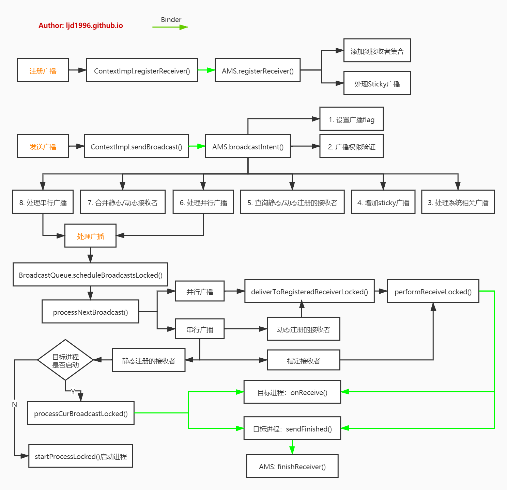

概述 广播(Broadcast)机制用于进程/线程间通信，广播分为广播发送和广播接收两个过程，其中广播接收者BroadcastReceiver便是Android四大组件之一。广播分类：
普通广播：通过Context.sendBroadcast()发送；
有序广播：通过Context.sendOrderedBroadcast()发送；
Sticky广播：通过Context.sendStickyBroadcast()发送，对于粘性广播，registerReceiver()会有一个Intent类型返回值，里面带有相关参数。
注：本文基于Android 10源码，为了文章的简洁性，引用源码的地方可能有所删减。
注册广播 ContextImpl.registerReceiver 1 2 3 4 5 6 7 8 9 10 11 12 13 14 15 16 17 18 19 20 21 22 23 24 25 26 27 28 29 30 31 32 33 34 35 36 37 38 39 40 41 42 43 @Override public Intent registerReceiver (BroadcastReceiver receiver, IntentFilter filter) return registerReceiver(receiver, filter, null , null ); } @Override public Intent registerReceiver (BroadcastReceiver receiver, IntentFilter filter, String broadcastPermission, Handler scheduler) return registerReceiverInternal(receiver, getUserId(), filter, broadcastPermission, scheduler, getOuterContext(), 0 ); } private Intent registerReceiverInternal (BroadcastReceiver receiver, int userId, IntentFilter filter, String broadcastPermission, Handler scheduler, Context context, int flags) IIntentReceiver rd = null ; if (receiver != null ) { if (mPackageInfo != null && context != null ) { if (scheduler == null ) { scheduler = mMainThread.getHandler(); } rd = mPackageInfo.getReceiverDispatcher(receiver, context, scheduler, mMainThread.getInstrumentation(), true ); } } try { final Intent intent = ActivityManager.getService().registerReceiver( mMainThread.getApplicationThread(), mBasePackageName, rd, filter, broadcastPermission, userId, flags); if (intent != null ) { intent.setExtrasClassLoader(getClassLoader()); intent.prepareToEnterProcess(); } return intent; } catch (RemoteException e) { throw e.rethrowFromSystemServer(); } }
LoadedApk.getReceiverDispatcher 1 2 3 4 5 6 7 8 9 10 11 12 13 14 15 16 17 18 19 20 21 22 23 24 25 26 27 28 29 30 31 32 33 34 35 36 37 38 39 40 41 42 43 44 45 46 47 48 49 50 51 52 53 54 55 56 57 private final ArrayMap<Context, ArrayMap<BroadcastReceiver, ReceiverDispatcher>> mReceivers = new ArrayMap<>();public IIntentReceiver getReceiverDispatcher (BroadcastReceiver r, Context context, Handler handler, Instrumentation instrumentation, boolean registered) synchronized (mReceivers) { LoadedApk.ReceiverDispatcher rd = null ; ArrayMap<BroadcastReceiver, LoadedApk.ReceiverDispatcher> map = null ; if (registered) { map = mReceivers.get(context); if (map != null ) { rd = map.get(r); } } if (rd == null ) { rd = new ReceiverDispatcher(r, context, handler, instrumentation, registered); if (registered) { if (map == null ) { map = new ArrayMap<BroadcastReceiver, LoadedApk.ReceiverDispatcher>(); mReceivers.put(context, map); } map.put(r, rd); } } else { rd.validate(context, handler); } rd.mForgotten = false ; return rd.getIIntentReceiver(); } } ReceiverDispatcher(BroadcastReceiver receiver, Context context, Handler activityThread, Instrumentation instrumentation, boolean registered) { if (activityThread == null ) { throw new NullPointerException("Handler must not be null" ); } mIIntentReceiver = new InnerReceiver(this , !registered); mReceiver = receiver; mContext = context; mActivityThread = activityThread; mInstrumentation = instrumentation; mRegistered = registered; mLocation = new IntentReceiverLeaked(null ); mLocation.fillInStackTrace(); } final static class InnerReceiver extends IIntentReceiver .Stub final WeakReference<LoadedApk.ReceiverDispatcher> mDispatcher; final LoadedApk.ReceiverDispatcher mStrongRef; InnerReceiver(LoadedApk.ReceiverDispatcher rd, boolean strong) { mDispatcher = new WeakReference<LoadedApk.ReceiverDispatcher>(rd); mStrongRef = strong ? rd : null ; } }
InnerReceiver继承于IIntentReceiver.Stub，显然它是一个Binder服务端，广播分发者通过rd.getIIntentReceiver()可获取该Binder服务端对象用于Binder IPC通信。
AMS.registerReceiver 1 2 3 4 5 6 7 8 9 10 11 12 13 14 15 16 17 18 19 20 21 22 23 24 25 26 27 28 29 30 31 32 33 34 35 36 37 38 39 40 41 42 43 44 45 46 47 48 49 50 51 52 53 54 55 56 57 58 59 60 61 62 63 64 65 66 67 68 69 70 71 72 73 74 75 76 77 78 79 80 81 82 83 84 85 86 87 88 89 90 91 92 93 94 95 96 97 98 99 100 101 102 103 104 105 106 107 108 109 110 111 112 113 114 115 116 117 118 119 120 121 122 123 final SparseArray<ArrayMap<String, ArrayList<Intent>>> mStickyBroadcasts = new SparseArray<ArrayMap<String, ArrayList<Intent>>>(); final HashMap<IBinder, ReceiverList> mRegisteredReceivers = new HashMap<>();public Intent registerReceiver (IApplicationThread caller, String callerPackage, IIntentReceiver receiver, IntentFilter filter, String permission, int userId, int flags) ArrayList<Intent> stickyIntents = null ; ProcessRecord callerApp = null ; final boolean visibleToInstantApps = (flags & Context.RECEIVER_VISIBLE_TO_INSTANT_APPS) != 0 ; int callingUid; int callingPid; boolean instantApp; synchronized (this ) { Iterator<String> actions = filter.actionsIterator(); if (actions == null ) { ArrayList<String> noAction = new ArrayList<String>(1 ); noAction.add(null ); actions = noAction.iterator(); } int [] userIds = { UserHandle.USER_ALL, UserHandle.getUserId(callingUid) }; while (actions.hasNext()) { String action = actions.next(); for (int id : userIds) { ArrayMap<String, ArrayList<Intent>> stickies = mStickyBroadcasts.get(id); if (stickies != null ) { ArrayList<Intent> intents = stickies.get(action); if (intents != null ) { if (stickyIntents == null ) { stickyIntents = new ArrayList<Intent>(); } stickyIntents.addAll(intents); } } } } } ArrayList<Intent> allSticky = null ; if (stickyIntents != null ) { final ContentResolver resolver = mContext.getContentResolver(); for (int i = 0 , N = stickyIntents.size(); i < N; i++) { Intent intent = stickyIntents.get(i); if (instantApp && (intent.getFlags() & Intent.FLAG_RECEIVER_VISIBLE_TO_INSTANT_APPS) == 0 ) { continue ; } if (filter.match(resolver, intent, true , TAG) >= 0 ) { if (allSticky == null ) { allSticky = new ArrayList<Intent>(); } allSticky.add(intent); } } } Intent sticky = allSticky != null ? allSticky.get(0 ) : null ; if (receiver == null ) { return sticky; } synchronized (this ) { if (callerApp != null && (callerApp.thread == null || callerApp.thread.asBinder() != caller.asBinder())) { return null ; } ReceiverList rl = mRegisteredReceivers.get(receiver.asBinder()); if (rl == null ) { rl = new ReceiverList(this , callerApp, callingPid, callingUid, userId, receiver); if (rl.app != null ) { rl.app.receivers.add(rl); } else { try { receiver.asBinder().linkToDeath(rl, 0 ); } catch (RemoteException e) { return sticky; } rl.linkedToDeath = true ; } mRegisteredReceivers.put(receiver.asBinder(), rl); } BroadcastFilter bf = new BroadcastFilter(filter, rl, callerPackage, permission, callingUid, userId, instantApp, visibleToInstantApps); if (rl.containsFilter(filter)) { Slog.w(TAG, "Receiver with filter " + filter + " already registered for pid " + rl.pid + ", callerPackage is " + callerPackage); } else { rl.add(bf); mReceiverResolver.addFilter(bf); } if (allSticky != null ) { ArrayList receivers = new ArrayList(); receivers.add(bf); final int stickyCount = allSticky.size(); for (int i = 0 ; i < stickyCount; i++) { Intent intent = allSticky.get(i); BroadcastQueue queue = broadcastQueueForIntent(intent); BroadcastRecord r = new BroadcastRecord(queue, intent, null , null , -1 , -1 , false , null , null , OP_NONE, null , receivers, null , 0 , null , null , false , true , true , -1 ); queue.enqueueParallelBroadcastLocked(r); queue.scheduleBroadcastsLocked(); } } return sticky; } }
在BroadcastQueue中有两个广播队列mParallelBroadcasts，mOrderedBroadcasts，数据类型都为ArrayList：
mParallelBroadcasts：并行广播队列，可以立刻执行，而无需等待另一个广播运行完成，该队列只允许动态已注册的广播，从而避免发生同时拉起大量进程来执行广播，前台和后台的广播分别位于独立的队列。
mOrderedBroadcasts：有序广播队列，同一时间只允许执行一个广播，该队列顶部的广播便是活动广播，其他广播必须等待该广播结束才能运行，也是独立区别前台和后台的广播。
小结 注册广播过程简要如下：
调用registerReceiver方法，传递的参数为BroadcastReceiver和IntentFilter；
创建对象LoadedApk.ReceiverDispatcher.InnerReceiver，该对象继承于IIntentReceiver.Stub；
通过AMS把当前进程的ApplicationThread和InnerReceiver对象的代理类，注册登记到system_server进程；
当广播receiver没有注册过，则创建广播接收者队列ReceiverList，该对象继承于ArrayList，并添加到AMS.mRegisteredReceivers(已注册广播队列)；
创建BroadcastFilter，并添加到AMS.mReceiverResolver，同时将其添加到该广播接收者的ReceiverList中；
当注册的是Sticky广播时会创建BroadcastRecord，并添加到BroadcastQueue的mParallelBroadcasts(并行广播队列)，注册后调用AMS来尽快处理该广播。
发送广播 ContextImpl.sendBroadcast 1 2 3 4 5 6 7 8 9 10 11 12 13 14 15 16 17 18 19 20 21 22 23 24 25 26 27 28 29 30 31 32 33 34 35 36 37 38 39 40 41 42 43 44 45 46 47 48 49 50 51 52 53 54 55 56 57 58 59 60 61 62 63 64 65 66 67 68 69 70 71 72 73 public void sendBroadcast (Intent intent) warnIfCallingFromSystemProcess(); String resolvedType = intent.resolveTypeIfNeeded(getContentResolver()); try { intent.prepareToLeaveProcess(this ); ActivityManager.getService().broadcastIntent(mMainThread.getApplicationThread(), intent, resolvedType, null , Activity.RESULT_OK, null , null , null , AppOpsManager.OP_NONE, null , false , false , getUserId()); } catch (RemoteException e) { throw e.rethrowFromSystemServer(); } } void sendOrderedBroadcast (Intent intent, String receiverPermission, int appOp, BroadcastReceiver resultReceiver, Handler scheduler, int initialCode, String initialData, Bundle initialExtras, Bundle options) warnIfCallingFromSystemProcess(); IIntentReceiver rd = null ; if (resultReceiver != null ) { if (mPackageInfo != null ) { if (scheduler == null ) { scheduler = mMainThread.getHandler(); } rd = mPackageInfo.getReceiverDispatcher(resultReceiver, getOuterContext(), scheduler, mMainThread.getInstrumentation(), false ); } else { if (scheduler == null ) { scheduler = mMainThread.getHandler(); } rd = new LoadedApk.ReceiverDispatcher(resultReceiver, getOuterContext(), scheduler, null , false ).getIIntentReceiver(); } } String resolvedType = intent.resolveTypeIfNeeded(getContentResolver()); String[] receiverPermissions = receiverPermission == null ? null : new String[] {receiverPermission}; try { intent.prepareToLeaveProcess(this ); ActivityManager.getService().broadcastIntent(mMainThread.getApplicationThread(), intent, resolvedType, rd, initialCode, initialData, initialExtras, receiverPermissions, appOp, options, true , false , getUserId()); } catch (RemoteException e) { throw e.rethrowFromSystemServer(); } } public void sendStickyOrderedBroadcastAsUser (Intent intent, UserHandle user, BroadcastReceiver resultReceiver, Handler scheduler, int initialCode, String initialData, Bundle initialExtras) IIntentReceiver rd = null ; if (resultReceiver != null ) { if (mPackageInfo != null ) { if (scheduler == null ) { scheduler = mMainThread.getHandler(); } rd = mPackageInfo.getReceiverDispatcher(resultReceiver, getOuterContext(), scheduler, mMainThread.getInstrumentation(), false ); } else { if (scheduler == null ) { scheduler = mMainThread.getHandler(); } rd = new LoadedApk.ReceiverDispatcher( resultReceiver, getOuterContext(), scheduler, null , false ).getIIntentReceiver(); } } String resolvedType = intent.resolveTypeIfNeeded(getContentResolver()); try { intent.prepareToLeaveProcess(this ); ActivityManager.getService().broadcastIntent(mMainThread.getApplicationThread(), intent, resolvedType, rd, initialCode, initialData, initialExtras, null , AppOpsManager.OP_NONE, null , true , true , user.getIdentifier()); } catch (RemoteException e) { throw e.rethrowFromSystemServer(); } }
AMS.broadcastIntent 1 2 3 4 5 6 7 8 9 10 11 12 13 14 15 16 17 18 19 20 21 22 23 24 25 26 27 28 29 30 31 32 33 34 35 36 37 38 39 public final int broadcastIntent (IApplicationThread caller, Intent intent, String resolvedType, IIntentReceiver resultTo, int resultCode, String resultData, Bundle resultExtras, String[] requiredPermissions, int appOp, Bundle bOptions, boolean serialized, boolean sticky, int userId) enforceNotIsolatedCaller("broadcastIntent" ); synchronized (this ) { intent = verifyBroadcastLocked(intent); final ProcessRecord callerApp = getRecordForAppLocked(caller); final int callingPid = Binder.getCallingPid(); final int callingUid = Binder.getCallingUid(); final long origId = Binder.clearCallingIdentity(); int res = broadcastIntentLocked(callerApp, callerApp != null ? callerApp.info.packageName : null , intent, resolvedType, resultTo, resultCode, resultData, resultExtras, requiredPermissions, appOp, bOptions, serialized, sticky, callingPid, callingUid, userId); Binder.restoreCallingIdentity(origId); return res; } } final int broadcastIntentLocked (ProcessRecord callerApp, String callerPackage, Intent intent, String resolvedType, IIntentReceiver resultTo, int resultCode, String resultData, Bundle resultExtras, String[] requiredPermissions, int appOp, Bundle bOptions, boolean ordered, boolean sticky, int callingPid, int callingUid, int userId) }
broadcastIntent()方法有两个布尔参数serialized和sticky来共同决定是普通广播，有序广播，还是Sticky广播，参数如下：
类型
serialized
sticky
sendBroadcast
false
false
sendOrderedBroadcast
true
false
sendStickyBroadcast
false
true
设置广播flag 1 2 3 4 5 6 7 8 9 10 11 12 13 14 15 16 17 18 19 20 21 22 23 24 25 26 27 intent = new Intent(intent); final boolean callerInstantApp = isInstantApp(callerApp, callerPackage, callingUid);if (callerInstantApp) { intent.setFlags(intent.getFlags() & ~Intent.FLAG_RECEIVER_VISIBLE_TO_INSTANT_APPS); } intent.addFlags(Intent.FLAG_EXCLUDE_STOPPED_PACKAGES); if (!mProcessesReady && (intent.getFlags()&Intent.FLAG_RECEIVER_BOOT_UPGRADE) == 0 ) { intent.addFlags(Intent.FLAG_RECEIVER_REGISTERED_ONLY); } userId = mUserController.handleIncomingUser(callingPid, callingUid, userId, true , ALLOW_NON_FULL, "broadcast" , callerPackage); if (userId != UserHandle.USER_ALL && !mUserController.isUserOrItsParentRunning(userId)) { if ((callingUid != SYSTEM_UID || (intent.getFlags() & Intent.FLAG_RECEIVER_BOOT_UPGRADE) == 0 ) && !Intent.ACTION_SHUTDOWN.equals(intent.getAction())) { return ActivityManager.BROADCAST_FAILED_USER_STOPPED; } }
这个过程最重要的工作是：
添加flag=FLAG_EXCLUDE_STOPPED_PACKAGES，保证已停止app不会收到该广播；
当系统还没有启动完成，则不允许启动新进程；
当非USER_ALL广播且当前用户并没有处于Running的情况下，除非是系统升级广播或者关机广播，否则直接返回。
BroadcastReceiver还有其他flag，位于Intent.java:
1 2 3 4 5 6 FLAG_RECEIVER_REGISTERED_ONLY FLAG_RECEIVER_REPLACE_PENDING FLAG_RECEIVER_FOREGROUND FLAG_RECEIVER_NO_ABORT FLAG_RECEIVER_REGISTERED_ONLY_BEFORE_BOOT FLAG_RECEIVER_BOOT_UPGRADE
广播权限验证 1 2 3 4 5 6 7 8 9 10 11 12 13 14 15 16 17 18 19 20 21 22 23 24 25 26 27 28 29 30 31 32 33 34 35 36 37 38 39 40 41 42 43 44 45 46 47 48 final String action = intent.getAction();final boolean isProtectedBroadcast;try { isProtectedBroadcast = AppGlobals.getPackageManager().isProtectedBroadcast(action); } catch (RemoteException e) { return ActivityManager.BROADCAST_SUCCESS; } final boolean isCallerSystem;switch (UserHandle.getAppId(callingUid)) { case ROOT_UID: case SYSTEM_UID: case PHONE_UID: case BLUETOOTH_UID: case NFC_UID: case SE_UID: isCallerSystem = true ; break ; default : isCallerSystem = (callerApp != null ) && callerApp.persistent; break ; } if (!isCallerSystem) { if (isProtectedBroadcast) { throw new SecurityException(msg); } else if (AppWidgetManager.ACTION_APPWIDGET_CONFIGURE.equals(action) || AppWidgetManager.ACTION_APPWIDGET_UPDATE.equals(action)) { if (callerPackage == null ) { String msg = "Permission Denial: not allowed to send broadcast " + action + " from unknown caller." ; Slog.w(TAG, msg); throw new SecurityException(msg); } else if (intent.getComponent() != null ) { if (!intent.getComponent().getPackageName().equals(callerPackage)) { String msg = "Permission Denial: not allowed to send broadcast " + action + " to " + intent.getComponent().getPackageName() + " from " + callerPackage; Slog.w(TAG, msg); throw new SecurityException(msg); } } else { intent.setPackage(callerPackage); } } }
对于appId为ROOT_UID，SYSTEM_UID，PHONE_UID，BLUETOOTH_UID，NFC_UID，SE_UID时都畅通无阻，当调用者进程为空或者非persistent进程的情况下：
当发送的是受保护广播isProtectedBroadcast(只允许系统使用)时则抛出异常；
当action为ACTION_APPWIDGET_CONFIGURE或ACTION_APPWIDGET_UPDATE时，虽然系统不希望该应用发送这种广播，但是出于兼容性考虑，限制该广播只能发送给自己，否则抛出异常。
处理系统相关广播 这里主要处理系统相关的广播。
1 2 3 4 5 6 7 8 9 10 11 12 13 14 15 16 17 18 19 20 21 22 if (action != null ) { switch (action) { case Intent.ACTION_UID_REMOVED: case Intent.ACTION_PACKAGE_REMOVED: case Intent.ACTION_PACKAGE_CHANGED: case Intent.ACTION_EXTERNAL_APPLICATIONS_UNAVAILABLE: case Intent.ACTION_EXTERNAL_APPLICATIONS_AVAILABLE: case Intent.ACTION_PACKAGES_SUSPENDED: case Intent.ACTION_PACKAGES_UNSUSPENDED: case Intent.ACTION_PACKAGE_REPLACED: case Intent.ACTION_PACKAGE_ADDED: case Intent.ACTION_PACKAGE_DATA_CLEARED: case Intent.ACTION_TIMEZONE_CHANGED: case Intent.ACTION_TIME_CHANGED: case Intent.ACTION_CLEAR_DNS_CACHE: case Proxy.PROXY_CHANGE_ACTION: case android.hardware.Camera.ACTION_NEW_PICTURE: case android.hardware.Camera.ACTION_NEW_VIDEO: case android.security.KeyChain.ACTION_TRUST_STORE_CHANGED: case "com.android.launcher.action.INSTALL_SHORTCUT" : } }
增加sticky广播 这个过程主要是将sticky广播增加到list，并放入mStickyBroadcasts里面。
1 2 3 4 5 6 7 8 9 10 11 12 13 14 15 16 17 18 19 20 21 22 23 24 25 26 27 28 29 30 31 32 33 34 35 36 37 38 39 40 if (sticky) { if (checkPermission(android.Manifest.permission.BROADCAST_STICKY, callingPid, callingUid) != PackageManager.PERMISSION_GRANTED) { throw new SecurityException(msg); } if (requiredPermissions != null && requiredPermissions.length > 0 ) { return ActivityManager.BROADCAST_STICKY_CANT_HAVE_PERMISSION; } if (intent.getComponent() != null ) { throw new SecurityException("Sticky broadcasts can't target a specific component" ); } if (userId != UserHandle.USER_ALL) { } ArrayMap<String, ArrayList<Intent>> stickies = mStickyBroadcasts.get(userId); if (stickies == null ) { stickies = new ArrayMap<>(); mStickyBroadcasts.put(userId, stickies); } ArrayList<Intent> list = stickies.get(intent.getAction()); if (list == null ) { list = new ArrayList<>(); stickies.put(intent.getAction(), list); } final int stickiesCount = list.size(); int i; for (i = 0 ; i < stickiesCount; i++) { if (intent.filterEquals(list.get(i))) { list.set(i, new Intent(intent)); break ; } } if (i >= stickiesCount) { list.add(new Intent(intent)); } }
查询receivers和registeredReceivers 1 2 3 4 5 6 7 8 9 10 11 12 13 14 15 16 17 18 19 20 21 22 23 24 25 26 27 28 29 30 31 32 33 34 35 int [] users;if (userId == UserHandle.USER_ALL) { users = mUserController.getStartedUserArray(); } else { users = new int [] {userId}; } List receivers = null ; List<BroadcastFilter> registeredReceivers = null ; if ((intent.getFlags()&Intent.FLAG_RECEIVER_REGISTERED_ONLY) == 0 ) { receivers = collectReceiverComponents(intent, resolvedType, callingUid, users); } if (intent.getComponent() == null ) { if (userId == UserHandle.USER_ALL && callingUid == SHELL_UID) { for (int i = 0 ; i < users.length; i++) { if (mUserController.hasUserRestriction( UserManager.DISALLOW_DEBUGGING_FEATURES, users[i])) { continue ; } List<BroadcastFilter> registeredReceiversForUser = mReceiverResolver.queryIntent(intent, resolvedType, false , users[i]); if (registeredReceivers == null ) { registeredReceivers = registeredReceiversForUser; } else if (registeredReceiversForUser != null ) { registeredReceivers.addAll(registeredReceiversForUser); } } } else { registeredReceivers = mReceiverResolver.queryIntent(intent, resolvedType, false , userId); } }
这里根据userId来决定广播是发送给全部的接收者，还是指定的userId。其中mReceiverResolver是AMS的成员变量，记录着已注册的广播接收者的resolver。
receivers：记录着匹配当前intent的所有静态注册广播接收者；
registeredReceivers：记录着匹配当前的所有动态注册的广播接收者。
处理并行广播 1 2 3 4 5 6 7 8 9 10 11 12 13 14 15 16 17 18 19 20 21 final boolean replacePending = (intent.getFlags()&Intent.FLAG_RECEIVER_REPLACE_PENDING) != 0 ;int NR = registeredReceivers != null ? registeredReceivers.size() : 0 ;if (!ordered && NR > 0 ) { final BroadcastQueue queue = broadcastQueueForIntent(intent); BroadcastRecord r = new BroadcastRecord(queue, intent, callerApp, callerPackage, callingPid, callingUid, callerInstantApp, resolvedType, requiredPermissions, appOp, brOptions, registeredReceivers, resultTo, resultCode, resultData, resultExtras, ordered, sticky, false , userId); final boolean replaced = replacePending && (queue.replaceParallelBroadcastLocked(r) != null ); if (!replaced) { queue.enqueueParallelBroadcastLocked(r); queue.scheduleBroadcastsLocked(); } registeredReceivers = null ; NR = 0 ; }
合并receivers 动态注册的registeredReceivers，全部合并都receivers，再统一按串行方式处理。
1 2 3 4 5 6 7 8 9 10 11 12 13 14 15 16 17 18 19 20 21 22 23 24 25 26 27 28 29 30 31 32 33 34 35 36 37 38 39 40 41 42 43 44 45 46 47 48 49 50 51 52 53 54 55 56 57 58 59 60 61 62 63 64 65 66 67 int ir = 0 ;if (receivers != null ) { String skipPackages[] = null ; if (Intent.ACTION_PACKAGE_ADDED.equals(intent.getAction()) || Intent.ACTION_PACKAGE_RESTARTED.equals(intent.getAction()) || Intent.ACTION_PACKAGE_DATA_CLEARED.equals(intent.getAction())) { Uri data = intent.getData(); if (data != null ) { String pkgName = data.getSchemeSpecificPart(); if (pkgName != null ) { skipPackages = new String[] { pkgName }; } } } else if (Intent.ACTION_EXTERNAL_APPLICATIONS_AVAILABLE.equals(intent.getAction())) { skipPackages = intent.getStringArrayExtra(Intent.EXTRA_CHANGED_PACKAGE_LIST); } if (skipPackages != null && (skipPackages.length > 0 )) { for (String skipPackage : skipPackages) { if (skipPackage != null ) { int NT = receivers.size(); for (int it=0 ; it<NT; it++) { ResolveInfo curt = (ResolveInfo)receivers.get(it); if (curt.activityInfo.packageName.equals(skipPackage)) { receivers.remove(it); it--; NT--; } } } } } int NT = receivers != null ? receivers.size() : 0 ; int it = 0 ; ResolveInfo curt = null ; BroadcastFilter curr = null ; while (it < NT && ir < NR) { if (curt == null ) { curt = (ResolveInfo)receivers.get(it); } if (curr == null ) { curr = registeredReceivers.get(ir); } if (curr.getPriority() >= curt.priority) { receivers.add(it, curr); ir++; curr = null ; it++; NT++; } else { it++; curt = null ; } } } while (ir < NR) { if (receivers == null ) { receivers = new ArrayList(); } receivers.add(registeredReceivers.get(ir)); ir++; }
处理串行广播 1 2 3 4 5 6 7 8 9 10 11 12 13 14 15 16 17 18 19 20 21 22 23 24 25 26 27 28 29 30 31 32 if ((receivers != null && receivers.size() > 0 ) || resultTo != null ) { BroadcastQueue queue = broadcastQueueForIntent(intent); BroadcastRecord r = new BroadcastRecord(queue, intent, callerApp, callerPackage, callingPid, callingUid, callerInstantApp, resolvedType, requiredPermissions, appOp, brOptions, receivers, resultTo, resultCode, resultData, resultExtras, ordered, sticky, false , userId); final BroadcastRecord oldRecord = replacePending ? queue.replaceOrderedBroadcastLocked(r) : null ; if (oldRecord != null ) { if (oldRecord.resultTo != null ) { final BroadcastQueue oldQueue = broadcastQueueForIntent(oldRecord.intent); try { oldQueue.performReceiveLocked(oldRecord.callerApp, oldRecord.resultTo, oldRecord.intent, Activity.RESULT_CANCELED, null , null , false , false , oldRecord.userId); } catch (RemoteException e) { } } } else { queue.enqueueOrderedBroadcastLocked(r); queue.scheduleBroadcastsLocked(); } } else { if (intent.getComponent() == null && intent.getPackage() == null && (intent.getFlags()&Intent.FLAG_RECEIVER_REGISTERED_ONLY) == 0 ) { addBroadcastStatLocked(intent.getAction(), callerPackage, 0 , 0 , 0 ); } } return ActivityManager.BROADCAST_SUCCESS;
小结 发送广播过程:
默认不发送给已停止（Intent.FLAG_EXCLUDE_STOPPED_PACKAGES）的应用包；
处理各种系统广播；
当为粘性广播，则将sticky广播增加到list，并放入mStickyBroadcasts里面；
当广播的Intent没有设置FLAG_RECEIVER_REGISTERED_ONLY，则允许静态广播接收者来处理该广播；
创建BroadcastRecord对象，并将该对象加入到相应的广播队列，然后调用BroadcastQueue的scheduleBroadcastsLocked()方法来完成的不同广播处理。
广播处理方式：
Sticky广播：在广播注册过程AMS.registerReceiver中处理粘性广播。创建BroadcastRecord对象，并添加到mParallelBroadcasts队列，然后执行queue.scheduleBroadcastsLocked；
并行广播：在广播发送过程中处理。只有动态注册的mRegisteredReceivers才会并行处理，会创建BroadcastRecord对象并添加到mParallelBroadcasts队列，然后执行queue.scheduleBroadcastsLocked；
串行广播：在广播发送过程中处理。所有静态注册的receivers以及动态注册的registeredReceivers都会合并到一张表处理，创建BroadcastRecord对象并添加到mOrderedBroadcasts队列，然后执行queue.scheduleBroadcastsLocked。
可见不管哪种广播方式，都是通过broadcastQueueForIntent()方法根据intent的flag来判断前台队列或者后台队列，然后再调用对应广播队列的scheduleBroadcastsLocked方法来处理广播。
处理广播 broadcastQueueForIntent 在AMS中有两个BroadcastQueue，分别对应前台和后台广播队列：
1 2 3 4 5 6 7 8 9 10 11 12 13 14 15 16 17 18 19 20 21 22 public class ServiceThread extends HandlerThread public ServiceThread (String name, int priority, boolean allowIo) } } final ServiceThread mHandlerThread = new ServiceThread(TAG, THREAD_PRIORITY_FOREGROUND, false );mHandlerThread.start(); final MainHandler mHandler = new MainHandler(mHandlerThread.getLooper());static final int BROADCAST_FG_TIMEOUT = 10 *1000 ;static final int BROADCAST_BG_TIMEOUT = 60 *1000 ;BroadcastQueue mFgBroadcastQueue = new BroadcastQueue(this , mHandler, "foreground" , BROADCAST_FG_TIMEOUT, false ); BroadcastQueue mBgBroadcastQueue = new BroadcastQueue(this , mHandler, "background" , BROADCAST_BG_TIMEOUT, true ); BroadcastQueue broadcastQueueForIntent (Intent intent) { final boolean isFg = (intent.getFlags() & Intent.FLAG_RECEIVER_FOREGROUND) != 0 ; return (isFg) ? mFgBroadcastQueue : mBgBroadcastQueue; }
看一下Intent.FLAG_RECEIVER_FOREGROUND的注释：If set, when sending a broadcast the recipient is allowed to run at foreground priority, with a shorter timeout interval. During normal broadcasts the receivers are not automatically hoisted out of the background priority class.。翻译一下大概意思是：如果设置了这个flag，则在发送广播时，允许接收者以更短的超时间隔在前台优先级运行。在正常广播期间，不会自动将接收者挂起在后台优先级之外。
BroadcastQueue的构造方法如下：
1 2 3 4 5 6 7 8 BroadcastQueue(ActivityManagerService service, Handler handler, String name, long timeoutPeriod, boolean allowDelayBehindServices) { mService = service; mHandler = new BroadcastHandler(handler.getLooper()); mQueueName = name; mTimeoutPeriod = timeoutPeriod; mDelayBehindServices = allowDelayBehindServices; }
scheduleBroadcastsLocked 在BroadcastQueue中有一个mParallelBroadcasts和一个mOrderedBroadcasts队列：
1 2 3 4 5 6 7 8 9 10 11 12 13 14 15 16 17 18 public final class BroadcastQueue final ArrayList<BroadcastRecord> mParallelBroadcasts = new ArrayList<>(); final ArrayList<BroadcastRecord> mOrderedBroadcasts = new ArrayList<>(); public void enqueueParallelBroadcastLocked (BroadcastRecord r) mParallelBroadcasts.add(r); enqueueBroadcastHelper(r); } public void enqueueOrderedBroadcastLocked (BroadcastRecord r) mOrderedBroadcasts.add(r); enqueueBroadcastHelper(r); } private void enqueueBroadcastHelper (BroadcastRecord r) r.enqueueClockTime = System.currentTimeMillis(); } }
无论是哪种广播，都会通过BroadcastQueue.scheduleBroadcastsLocked方法来处理。
1 2 3 4 5 6 7 8 9 10 11 12 13 14 15 16 17 18 19 20 21 22 23 24 25 26 27 28 29 final BroadcastHandler mHandler;private final class BroadcastHandler extends Handler public BroadcastHandler (Looper looper) super (looper, null , true ); } @Override public void handleMessage (Message msg) switch (msg.what) { case BROADCAST_INTENT_MSG: { processNextBroadcast(true ); } break ; case BROADCAST_TIMEOUT_MSG: { synchronized (mService) { broadcastTimeoutLocked(true ); } } break ; } } } public void scheduleBroadcastsLocked () if (mBroadcastsScheduled) { return ; } mHandler.sendMessage(mHandler.obtainMessage(BROADCAST_INTENT_MSG, this )); mBroadcastsScheduled = true ; }
由BroadcastQueue的构造函数可知BroadcastHandler采用的是AMS中启动的线程的Looper。scheduleBroadcastsLocked调用后，会发送BROADCAST_INTENT_MSG消息，接着在AMS中启动的这个线程中调用processNextBroadcast方法。
processNextBroadcast 1 2 3 4 5 6 7 8 9 10 11 12 13 14 15 16 17 18 19 20 21 22 23 24 25 26 27 28 29 30 31 32 33 34 35 36 37 38 39 40 41 42 43 44 45 46 47 48 49 50 51 52 53 54 55 56 57 58 59 60 61 62 63 64 65 66 67 68 69 70 71 72 73 74 75 76 77 78 79 80 81 82 83 84 85 86 87 88 89 90 91 92 93 94 95 96 97 98 99 100 101 102 103 104 105 106 107 108 109 110 111 112 113 114 115 116 117 118 119 120 121 122 123 124 125 126 127 128 129 130 131 132 133 134 135 136 137 138 139 140 141 142 143 144 145 146 147 148 149 150 151 152 153 154 155 156 157 158 159 160 161 162 163 164 165 166 167 168 169 170 171 172 173 174 175 176 177 178 179 180 181 182 183 184 185 186 187 final void processNextBroadcast (boolean fromMsg) synchronized (mService) { processNextBroadcastLocked(fromMsg, false ); } } final void processNextBroadcastLocked (boolean fromMsg, boolean skipOomAdj) BroadcastRecord r; mService.updateCpuStats(); if (fromMsg) { mBroadcastsScheduled = false ; } while (mParallelBroadcasts.size() > 0 ) { r = mParallelBroadcasts.remove(0 ); r.dispatchTime = SystemClock.uptimeMillis(); r.dispatchClockTime = System.currentTimeMillis(); final int N = r.receivers.size(); for (int i=0 ; i<N; i++) { Object target = r.receivers.get(i); deliverToRegisteredReceiverLocked(r, (BroadcastFilter)target, false , i); } addBroadcastToHistoryLocked(r); } if (mPendingBroadcast != null ) { boolean isDead; if (mPendingBroadcast.curApp.pid > 0 ) { synchronized (mService.mPidsSelfLocked) { ProcessRecord proc = mService.mPidsSelfLocked.get(mPendingBroadcast.curApp.pid); isDead = proc == null || proc.crashing; } } else { final ProcessRecord proc = mService.mProcessNames.get(mPendingBroadcast.curApp.processName, mPendingBroadcast.curApp.uid); isDead = proc == null || !proc.pendingStart; } if (!isDead) { return ; } else { mPendingBroadcast.state = BroadcastRecord.IDLE; mPendingBroadcast.nextReceiver = mPendingBroadcastRecvIndex; mPendingBroadcast = null ; } } boolean looped = false ; do { if (mOrderedBroadcasts.size() == 0 ) { mService.scheduleAppGcsLocked(); if (looped) { mService.updateOomAdjLocked(); } return ; } r = mOrderedBroadcasts.get(0 ); boolean forceReceive = false ; int numReceivers = (r.receivers != null ) ? r.receivers.size() : 0 ; if (mService.mProcessesReady && r.dispatchTime > 0 ) { long now = SystemClock.uptimeMillis(); if ((numReceivers > 0 ) && (now > r.dispatchTime + (2 *mTimeoutPeriod*numReceivers))) { broadcastTimeoutLocked(false ); forceReceive = true ; r.state = BroadcastRecord.IDLE; } } if (r.state != BroadcastRecord.IDLE) { return ; } if (r.receivers == null || r.nextReceiver >= numReceivers || r.resultAbort || forceReceive) { if (r.resultTo != null ) { try { performReceiveLocked(r.callerApp, r.resultTo, new Intent(r.intent), r.resultCode, r.resultData, r.resultExtras, false , false , r.userId); r.resultTo = null ; } catch (RemoteException e) { r.resultTo = null ; } } cancelBroadcastTimeoutLocked(); addBroadcastToHistoryLocked(r); mOrderedBroadcasts.remove(0 ); r = null ; looped = true ; continue ; } } while (r == null ); int recIdx = r.nextReceiver++; r.receiverTime = SystemClock.uptimeMillis(); if (recIdx == 0 ) { r.dispatchTime = r.receiverTime; r.dispatchClockTime = System.currentTimeMillis(); } if (!mPendingBroadcastTimeoutMessage) { long timeoutTime = r.receiverTime + mTimeoutPeriod; setBroadcastTimeoutLocked(timeoutTime); } final BroadcastOptions brOptions = r.options; final Object nextReceiver = r.receivers.get(recIdx); if (nextReceiver instanceof BroadcastFilter) { BroadcastFilter filter = (BroadcastFilter)nextReceiver; deliverToRegisteredReceiverLocked(r, filter, r.ordered, recIdx); if (r.receiver == null || !r.ordered) { r.state = BroadcastRecord.IDLE; scheduleBroadcastsLocked(); } else { } return ; } ResolveInfo info = (ResolveInfo)nextReceiver; ComponentName component = new ComponentName(info.activityInfo.applicationInfo.packageName, info.activityInfo.name); boolean skip = false ; if (skip) { r.delivery[recIdx] = BroadcastRecord.DELIVERY_SKIPPED; r.receiver = null ; r.curFilter = null ; r.state = BroadcastRecord.IDLE; r.manifestSkipCount++; scheduleBroadcastsLocked(); return ; } r.manifestCount++; r.delivery[recIdx] = BroadcastRecord.DELIVERY_DELIVERED; r.state = BroadcastRecord.APP_RECEIVE; r.curComponent = component; r.curReceiver = info.activityInfo; AppGlobals.getPackageManager().setPackageStoppedState(r.curComponent.getPackageName(), false , UserHandle.getUserId(r.callingUid)); if (app != null && app.thread != null && !app.killed) { app.addPackage(info.activityInfo.packageName, info.activityInfo.applicationInfo.versionCode, mService.mProcessStats); processCurBroadcastLocked(r, app, skipOomAdj); return ; } if ((r.curApp=mService.startProcessLocked(targetProcess, info.activityInfo.applicationInfo, true , r.intent.getFlags() | Intent.FLAG_FROM_BACKGROUND, "broadcast" , r.curComponent, (r.intent.getFlags()&Intent.FLAG_RECEIVER_BOOT_UPGRADE) != 0 , false , false )) == null ) { finishReceiverLocked(r, r.resultCode, r.resultData, r.resultExtras, r.resultAbort, false ); scheduleBroadcastsLocked(); r.state = BroadcastRecord.IDLE; return ; } mPendingBroadcast = r; mPendingBroadcastRecvIndex = recIdx; }
该方法可分为几个步骤：
处理并行广播：对于并行广播，遍历处理队列中的每一个并行广播，使用deliverToRegisteredReceiverLocked方法分发广播给所有已注册的receiver，然后调用addBroadcastToHistoryLocked方法将广播添加历史记录；
处理有序广播：
如果有等待处理（等待进程启动等情况）的广播（mPendingBroadcast），则会检查进程是不是还存活，如果存活则继续等待；
遍历有序广播队列中的元素，若满足条件r.receivers == null || r.nextReceiver >= numReceivers || r.resultAbort || forceReceive：如果该广播是发送给指定接收者的，则通过performReceiveLocked方法发送给指定的接收者处理。接着调用cancelBroadcastTimeoutLocked取消BROADCAST_TIMEOUT_MSG消息，并调用addBroadcastToHistoryLocked方法将当前元素加入广播历史记录表；
如果当前元素不满足上面的条件，则获取下一个广播接收者，然后通过setBroadcastTimeoutLocked方法发送超时的延时消息。对于动态注册的广播接收者，通过deliverToRegisteredReceiverLocked方法处理广播，然后调用scheduleBroadcastsLocked方法接着处理剩下的广播或者发送给剩下的接收者；对于静态注册的广播接收者，如果该receiver所对应的进程已经运行，则调用processCurBroadcastLocked方法直接处理广播，否则通过startProcessLocked方法启动进程，并将当前广播赋值给mPendingBroadcast。
接下来一一看下涉及到的这几个方法的源码。
deliverToRegisteredReceiverLocked system_server: deliverToRegisteredReceiverLocked 1 2 3 4 5 6 7 8 9 10 11 12 13 14 15 16 17 18 19 20 21 22 23 24 25 26 27 28 29 30 31 32 33 34 35 36 37 38 39 40 41 42 43 44 45 46 47 48 49 50 51 52 53 54 55 56 57 private void deliverToRegisteredReceiverLocked (BroadcastRecord r, BroadcastFilter filter, boolean ordered, int index) boolean skip = false ; if (skip) { r.delivery[index] = BroadcastRecord.DELIVERY_SKIPPED; return ; } r.delivery[index] = BroadcastRecord.DELIVERY_DELIVERED; if (ordered) { r.receiver = filter.receiverList.receiver.asBinder(); r.curFilter = filter; filter.receiverList.curBroadcast = r; r.state = BroadcastRecord.CALL_IN_RECEIVE; if (filter.receiverList.app != null ) { r.curApp = filter.receiverList.app; filter.receiverList.app.curReceivers.add(r); mService.updateOomAdjLocked(r.curApp, true ); } } if (filter.receiverList.app != null && filter.receiverList.app.inFullBackup) { if (ordered) { skipReceiverLocked(r); } } else { performReceiveLocked(filter.receiverList.app, filter.receiverList.receiver, new Intent(r.intent), r.resultCode, r.resultData, r.resultExtras, r.ordered, r.initialSticky, r.userId); } if (ordered) { r.state = BroadcastRecord.CALL_DONE_RECEIVE; } } void performReceiveLocked (ProcessRecord app, IIntentReceiver receiver, Intent intent, int resultCode, String data, Bundle extras, boolean ordered, boolean sticky, int sendingUser) throws RemoteException if (app != null ) { if (app.thread != null ) { app.thread.scheduleRegisteredReceiver(receiver, intent, resultCode, data, extras, ordered, sticky, sendingUser, app.repProcState); } else { throw new RemoteException("app.thread must not be null" ); } } else { receiver.performReceive(intent, resultCode, data, extras, ordered, sticky, sendingUser); } }
app.thread.scheduleRegisteredReceiver会进入到目标进程IApplicationThread的方法。
目标进程: scheduleRegisteredReceiver 1 2 3 4 5 6 7 8 9 10 11 12 13 14 15 16 17 18 19 20 21 22 23 24 25 26 27 28 29 30 31 32 33 34 35 36 37 38 39 40 41 42 43 44 45 46 47 48 49 50 51 52 53 54 55 56 57 58 59 60 61 62 63 64 65 66 67 68 69 70 71 72 73 74 75 76 77 78 79 80 81 82 83 84 85 86 87 88 89 90 91 92 93 94 95 96 97 98 99 100 101 102 103 104 105 106 107 108 109 110 111 112 113 114 115 116 117 private class ApplicationThread extends IApplicationThread .Stub public void scheduleRegisteredReceiver (IIntentReceiver receiver, Intent intent, int resultCode, String dataStr, Bundle extras, boolean ordered, boolean sticky, int sendingUser, int processState) throws RemoteException updateProcessState(processState, false ); receiver.performReceive(intent, resultCode, dataStr, extras, ordered, sticky, sendingUser); } } static final class ReceiverDispatcher final static class InnerReceiver extends IIntentReceiver .Stub final WeakReference<LoadedApk.ReceiverDispatcher> mDispatcher; final LoadedApk.ReceiverDispatcher mStrongRef; @Override public void performReceive (Intent intent, int resultCode, String data, Bundle extras, boolean ordered, boolean sticky, int sendingUser) final LoadedApk.ReceiverDispatcher rd; rd = mDispatcher.get(); if (rd != null ) { rd.performReceive(intent, resultCode, data, extras, ordered, sticky, sendingUser); } else { } } } public void performReceive (Intent intent, int resultCode, String data, Bundle extras, boolean ordered, boolean sticky, int sendingUser) final Args args = new Args(intent, resultCode, data, extras, ordered, sticky, sendingUser); if (intent == null || !mActivityThread.post(args.getRunnable())) { if (mRegistered && ordered) { IActivityManager mgr = ActivityManager.getService(); args.sendFinished(mgr); } } } final class Args extends BroadcastReceiver .PendingResult public final Runnable getRunnable () return () -> { final BroadcastReceiver receiver = mReceiver; final boolean ordered = mOrdered; final IActivityManager mgr = ActivityManager.getService(); final Intent intent = mCurIntent; mCurIntent = null ; mDispatched = true ; mPreviousRunStacktrace = new Throwable("Previous stacktrace" ); if (receiver == null || intent == null || mForgotten) { if (mRegistered && ordered) { sendFinished(mgr); } return ; } try { ClassLoader cl = mReceiver.getClass().getClassLoader(); intent.setExtrasClassLoader(cl); intent.prepareToEnterProcess(); setExtrasClassLoader(cl); receiver.setPendingResult(this ); receiver.onReceive(mContext, intent); } catch (Exception e) { } if (receiver.getPendingResult() != null ) { finish(); } }; } public final void finish () if (mType == TYPE_COMPONENT) { final IActivityManager mgr = ActivityManager.getService(); if (QueuedWork.hasPendingWork()) { QueuedWork.queue(new Runnable() { @Override public void run () sendFinished(mgr); } }, false ); } else { sendFinished(mgr); } } else if (mOrderedHint && mType != TYPE_UNREGISTERED) { final IActivityManager mgr = ActivityManager.getService(); sendFinished(mgr); } } public void sendFinished (IActivityManager am) synchronized (this ) { if (mFinished) { throw new IllegalStateException("Broadcast already finished" ); } mFinished = true ; try { if (mResultExtras != null ) { mResultExtras.setAllowFds(false ); } if (mOrderedHint) { am.finishReceiver(mToken, mResultCode, mResultData, mResultExtras, mAbortBroadcast, mFlags); } else { am.finishReceiver(mToken, 0 , null , null , false , mFlags); } } catch (RemoteException ex) { } } } } }
相关常量参数说明:
TYPE_COMPONENT: 静态注册
TYPE_REGISTERED: 动态注册
TYPE_UNREGISTERED: 取消注册
am.finishReceiver经过Binder调用会进入AMS.finishReceiver方法。
system_server: finishReceiver 1 2 3 4 5 6 7 8 9 10 11 12 13 14 15 16 17 18 19 20 21 22 23 24 25 26 27 28 29 30 31 32 33 34 35 36 37 38 39 40 41 42 43 44 45 46 47 48 49 50 51 52 53 54 55 56 57 58 59 60 61 62 63 64 65 66 67 68 69 70 71 72 73 74 75 76 77 78 79 80 81 82 83 84 85 86 87 88 89 90 91 public void finishReceiver (IBinder who, int resultCode, String resultData, Bundle resultExtras, boolean resultAbort, int flags) final long origId = Binder.clearCallingIdentity(); try { boolean doNext = false ; BroadcastRecord r; synchronized (this ) { BroadcastQueue queue = (flags & Intent.FLAG_RECEIVER_FOREGROUND) != 0 ? mFgBroadcastQueue : mBgBroadcastQueue; r = queue.getMatchingOrderedReceiver(who); if (r != null ) { doNext = r.queue.finishReceiverLocked(r, resultCode, resultData, resultExtras, resultAbort, true ); } if (doNext) { r.queue.processNextBroadcastLocked( false , true ); } trimApplicationsLocked(); } } finally { Binder.restoreCallingIdentity(origId); } } public boolean finishReceiverLocked (BroadcastRecord r, int resultCode, String resultData, Bundle resultExtras, boolean resultAbort, boolean waitForServices) final int state = r.state; final ActivityInfo receiver = r.curReceiver; r.state = BroadcastRecord.IDLE; r.receiver = null ; r.intent.setComponent(null ); if (r.curApp != null && r.curApp.curReceivers.contains(r)) { r.curApp.curReceivers.remove(r); } if (r.curFilter != null ) { r.curFilter.receiverList.curBroadcast = null ; } r.curFilter = null ; r.curReceiver = null ; r.curApp = null ; mPendingBroadcast = null ; r.resultCode = resultCode; r.resultData = resultData; r.resultExtras = resultExtras; if (resultAbort && (r.intent.getFlags()&Intent.FLAG_RECEIVER_NO_ABORT) == 0 ) { r.resultAbort = resultAbort; } else { r.resultAbort = false ; } if (waitForServices && r.curComponent != null && r.queue.mDelayBehindServices && r.queue.mOrderedBroadcasts.size() > 0 && r.queue.mOrderedBroadcasts.get(0 ) == r) { ActivityInfo nextReceiver; if (r.nextReceiver < r.receivers.size()) { Object obj = r.receivers.get(r.nextReceiver); nextReceiver = (obj instanceof ActivityInfo) ? (ActivityInfo)obj : null ; } else { nextReceiver = null ; } if (receiver == null || nextReceiver == null || receiver.applicationInfo.uid != nextReceiver.applicationInfo.uid || !receiver.processName.equals(nextReceiver.processName)) { if (mService.mServices.hasBackgroundServicesLocked(r.userId)) { r.state = BroadcastRecord.WAITING_SERVICES; return false ; } } } r.curComponent = null ; return state == BroadcastRecord.APP_RECEIVE || state == BroadcastRecord.CALL_DONE_RECEIVE; } final int mMaxStartingBackground;boolean hasBackgroundServicesLocked (int callingUser) ServiceMap smap = mServiceMap.get(callingUser); return smap != null ? smap.mStartingBackground.size() >= mMaxStartingBackground : false ; }
processCurBroadcastLocked system_server: processCurBroadcastLocked 1 2 3 4 5 6 7 8 9 10 11 12 13 14 15 16 17 18 19 20 21 22 23 24 25 26 27 28 29 30 31 32 33 34 35 36 37 38 39 private final void processCurBroadcastLocked (BroadcastRecord r, ProcessRecord app, boolean skipOomAdj) throws RemoteException if (app.thread == null ) { throw new RemoteException(); } if (app.inFullBackup) { skipReceiverLocked(r); return ; } r.receiver = app.thread.asBinder(); r.curApp = app; app.curReceivers.add(r); app.forceProcessStateUpTo(ActivityManager.PROCESS_STATE_RECEIVER); mService.updateLruProcessLocked(app, false , null ); if (!skipOomAdj) { mService.updateOomAdjLocked(); } r.intent.setComponent(r.curComponent); boolean started = false ; try { mService.notifyPackageUse(r.intent.getComponent().getPackageName(), PackageManager.NOTIFY_PACKAGE_USE_BROADCAST_RECEIVER); app.thread.scheduleReceiver(new Intent(r.intent), r.curReceiver, mService.compatibilityInfoForPackageLocked(r.curReceiver.applicationInfo), r.resultCode, r.resultData, r.resultExtras, r.ordered, r.userId, app.repProcState); started = true ; } finally { if (!started) { r.receiver = null ; r.curApp = null ; app.curReceivers.remove(r); } } }
目标进程: scheduleReceiver 1 2 3 4 5 6 7 8 9 10 11 12 13 14 15 16 17 18 19 20 21 22 23 24 25 26 27 28 29 30 31 32 33 34 35 36 37 38 39 40 41 42 43 44 45 46 47 48 49 50 51 52 53 54 55 56 57 58 59 60 61 62 63 private class ApplicationThread extends IApplicationThread .Stub public final void scheduleReceiver (Intent intent, ActivityInfo info, CompatibilityInfo compatInfo, int resultCode, String data, Bundle extras, boolean sync, int sendingUser, int processState) updateProcessState(processState, false ); ReceiverData r = new ReceiverData(intent, resultCode, data, extras, sync, false , mAppThread.asBinder(), sendingUser); r.info = info; r.compatInfo = compatInfo; sendMessage(H.RECEIVER, r); } } public final class ActivityThread extends ClientTransactionHandler class H extends Handler public void handleMessage (Message msg) switch (msg.what) { case RECEIVER: handleReceiver((ReceiverData)msg.obj); break ; } } } private void handleReceiver (ReceiverData data) String component = data.intent.getComponent().getClassName(); LoadedApk packageInfo = getPackageInfoNoCheck(data.info.applicationInfo, data.compatInfo); IActivityManager mgr = ActivityManager.getService(); Application app; BroadcastReceiver receiver; ContextImpl context; try { app = packageInfo.makeApplication(false , mInstrumentation); context = (ContextImpl) app.getBaseContext(); if (data.info.splitName != null ) { context = (ContextImpl) context.createContextForSplit(data.info.splitName); } java.lang.ClassLoader cl = context.getClassLoader(); data.intent.setExtrasClassLoader(cl); data.intent.prepareToEnterProcess(); data.setExtrasClassLoader(cl); receiver = packageInfo.getAppFactory().instantiateReceiver(cl, data.info.name, data.intent); } catch (Exception e) { data.sendFinished(mgr); throw new RuntimeException(); } try { sCurrentBroadcastIntent.set(data.intent); receiver.setPendingResult(data); receiver.onReceive(context.getReceiverRestrictedContext(), data.intent); } catch (Exception e) { data.sendFinished(mgr); throw new RuntimeException(); } finally { sCurrentBroadcastIntent.set(null ); } if (receiver.getPendingResult() != null ) { data.finish(); } } }
system_server: finishReceiver 同上。
setBroadcastTimeoutLocked/cancelBroadcastTimeoutLocked 1 2 3 4 5 6 7 8 9 10 11 12 13 14 final void setBroadcastTimeoutLocked (long timeoutTime) if (!mPendingBroadcastTimeoutMessage) { Message msg = mHandler.obtainMessage(BROADCAST_TIMEOUT_MSG, this ); mHandler.sendMessageAtTime(msg, timeoutTime); mPendingBroadcastTimeoutMessage = true ; } } final void cancelBroadcastTimeoutLocked () if (mPendingBroadcastTimeoutMessage) { mHandler.removeMessages(BROADCAST_TIMEOUT_MSG, this ); mPendingBroadcastTimeoutMessage = false ; } }
addBroadcastToHistoryLocked 1 2 3 4 5 6 7 8 9 10 11 12 private final void addBroadcastToHistoryLocked (BroadcastRecord original) original.finishTime = SystemClock.uptimeMillis(); final BroadcastRecord historyRecord = original.maybeStripForHistory(); mBroadcastHistory[mHistoryNext] = historyRecord; mHistoryNext = ringAdvance(mHistoryNext, 1 , MAX_BROADCAST_HISTORY); mBroadcastSummaryHistory[mSummaryHistoryNext] = historyRecord.intent; mSummaryHistoryEnqueueTime[mSummaryHistoryNext] = historyRecord.enqueueClockTime; mSummaryHistoryDispatchTime[mSummaryHistoryNext] = historyRecord.dispatchClockTime; mSummaryHistoryFinishTime[mSummaryHistoryNext] = System.currentTimeMillis(); mSummaryHistoryNext = ringAdvance(mSummaryHistoryNext, 1 , MAX_BROADCAST_SUMMARY_HISTORY); }
LocalBroadcastManager 概述 仅考虑广播通信的情况，如果不需要实现跨进程的通信时，可以使用LocalBroadcastManager替代Broadcast，这是一种更加高效且安全的方式。二者的通信方式：
BroadcastReceiver采用的是Binder来实现跨进程间的通信；
LocalBroadcastManager使用的是Handler通信机制。
使用示例：
1 2 3 4 5 6 7 8 9 10 11 12 13 public class MyReceiver extends BroadcastReceiver public void onReceive (Context context, Intent intent) } } MyReceiver receiver = new MyReceiver(); LocalBroadcastManager.getInstance(context).registerReceiver(receiver, new IntentFilter("com.hearing.receiver" )); LocalBroadcastManager.getInstance(context).sendBroadcast(new Intent("com.hearing.receiver" )); LocalBroadcastManager.getInstance(context).unregisterReceiver(receiver);
LocalBroadcastManager只能使用代码注册，不能在xml中注册静态广播，LocalBroadcastManager不能跨进程通信，不用与system_server交互，即可完成广播全过程。
构造方法 1 2 3 4 5 6 7 8 9 10 11 12 13 14 15 16 17 18 19 20 21 22 23 24 25 26 27 28 29 30 31 32 33 34 35 36 public final class LocalBroadcastManager private final Context mAppContext; private final HashMap<BroadcastReceiver, ArrayList<ReceiverRecord>> mReceivers = new HashMap<>(); private final HashMap<String, ArrayList<ReceiverRecord>> mActions = new HashMap<>(); private final ArrayList<BroadcastRecord> mPendingBroadcasts = new ArrayList<>(); private final Handler mHandler; private static final Object mLock = new Object(); private static LocalBroadcastManager mInstance; @NonNull public static LocalBroadcastManager getInstance (@NonNull Context context) synchronized (mLock) { if (mInstance == null ) { mInstance = new LocalBroadcastManager(context.getApplicationContext()); } return mInstance; } } private LocalBroadcastManager (Context context) mAppContext = context; mHandler = new Handler(context.getMainLooper()) { @Override public void handleMessage (Message msg) switch (msg.what) { case MSG_EXEC_PENDING_BROADCASTS: executePendingBroadcasts(); break ; default : super .handleMessage(msg); } } }; } }
这里涉及到两个内部类：
1 2 3 4 5 6 7 8 9 10 11 12 13 14 15 16 17 18 19 20 21 private static final class ReceiverRecord final IntentFilter filter; final BroadcastReceiver receiver; boolean broadcasting; boolean dead; ReceiverRecord(IntentFilter _filter, BroadcastReceiver _receiver) { filter = _filter; receiver = _receiver; } } private static final class BroadcastRecord final Intent intent; final ArrayList<ReceiverRecord> receivers; BroadcastRecord(Intent _intent, ArrayList<ReceiverRecord> _receivers) { intent = _intent; receivers = _receivers; } }
registerReceiver 1 2 3 4 5 6 7 8 9 10 11 12 13 14 15 16 17 18 19 20 public void registerReceiver (@NonNull BroadcastReceiver receiver, @NonNull IntentFilter filter) synchronized (mReceivers) { ReceiverRecord entry = new ReceiverRecord(filter, receiver); ArrayList<ReceiverRecord> filters = mReceivers.get(receiver); if (filters == null ) { filters = new ArrayList<>(1 ); mReceivers.put(receiver, filters); } filters.add(entry); for (int i=0 ; i<filter.countActions(); i++) { String action = filter.getAction(i); ArrayList<ReceiverRecord> entries = mActions.get(action); if (entries == null ) { entries = new ArrayList<ReceiverRecord>(1 ); mActions.put(action, entries); } entries.add(entry); } } }
注册过程就是向mReceivers和mActions集合添加相应数据：
mReceivers：数据类型为HashMap<BroadcastReceiver, ArrayList<ReceiverRecord>>，记录广播接收者与IntentFilter列表的对应关系；
mActions：数据类型为HashMap<String, ArrayList<ReceiverRecord>>，记录action与广播接收者的对应关系。
unregisterReceiver 1 2 3 4 5 6 7 8 9 10 11 12 13 14 15 16 17 18 19 20 21 22 23 24 25 26 27 28 29 30 public void unregisterReceiver (@NonNull BroadcastReceiver receiver) synchronized (mReceivers) { final ArrayList<ReceiverRecord> filters = mReceivers.remove(receiver); if (filters == null ) { return ; } for (int i=filters.size()-1 ; i>=0 ; i--) { final ReceiverRecord filter = filters.get(i); filter.dead = true ; for (int j=0 ; j<filter.filter.countActions(); j++) { final String action = filter.filter.getAction(j); final ArrayList<ReceiverRecord> receivers = mActions.get(action); if (receivers != null ) { for (int k=receivers.size()-1 ; k>=0 ; k--) { final ReceiverRecord rec = receivers.get(k); if (rec.receiver == receiver) { rec.dead = true ; receivers.remove(k); } } if (receivers.size() <= 0 ) { mActions.remove(action); } } } } } }
sendBroadcast 1 2 3 4 5 6 7 8 9 10 11 12 13 14 15 16 17 18 19 20 21 22 23 24 25 26 27 28 29 30 31 32 33 34 35 36 37 38 39 40 41 42 43 public boolean sendBroadcast (@NonNull Intent intent) synchronized (mReceivers) { final String action = intent.getAction(); final String type = intent.resolveTypeIfNeeded(mAppContext.getContentResolver()); final Uri data = intent.getData(); final String scheme = intent.getScheme(); final Set<String> categories = intent.getCategories(); ArrayList<ReceiverRecord> entries = mActions.get(intent.getAction()); if (entries != null ) { ArrayList<ReceiverRecord> receivers = null ; for (int i=0 ; i<entries.size(); i++) { ReceiverRecord receiver = entries.get(i); if (receiver.broadcasting) { continue ; } int match = receiver.filter.match(action, type, scheme, data, categories, "LocalBroadcastManager" ); if (match >= 0 ) { if (receivers == null ) { receivers = new ArrayList<ReceiverRecord>(); } receivers.add(receiver); receiver.broadcasting = true ; } } if (receivers != null ) { for (int i=0 ; i<receivers.size(); i++) { receivers.get(i).broadcasting = false ; } mPendingBroadcasts.add(new BroadcastRecord(intent, receivers)); if (!mHandler.hasMessages(MSG_EXEC_PENDING_BROADCASTS)) { mHandler.sendEmptyMessage(MSG_EXEC_PENDING_BROADCASTS); } return true ; } } } return false ; }
接下来看看executePendingBroadcasts方法：
1 2 3 4 5 6 7 8 9 10 11 12 13 14 15 16 17 18 19 20 21 22 23 24 25 private void executePendingBroadcasts () while (true ) { final BroadcastRecord[] brs; synchronized (mReceivers) { final int N = mPendingBroadcasts.size(); if (N <= 0 ) { return ; } brs = new BroadcastRecord[N]; mPendingBroadcasts.toArray(brs); mPendingBroadcasts.clear(); } for (int i=0 ; i<brs.length; i++) { final BroadcastRecord br = brs[i]; final int nbr = br.receivers.size(); for (int j=0 ; j<nbr; j++) { final ReceiverRecord rec = br.receivers.get(j); if (!rec.dead) { rec.receiver.onReceive(mAppContext, br.intent); } } } } }
由Handler可知该过程运行在app进程的主线程，所以onReceive()方法不能有耗时操作。
sendBroadcastSync 接下来看看sendBroadcastSync方法：
1 2 3 4 5 public void sendBroadcastSync (@NonNull Intent intent) if (sendBroadcast(intent)) { executePendingBroadcasts(); } }
从sendBroadcast的代码可知，当有与Intent匹配的BroadcastReceiver时，sendBroadcast方法返回true，同时BroadcastReceiver对应的BroadcastRecord被加入到mPendingBroadcasts中待处理，而executePendingBroadcasts方法就是用来处理mPendingBroadcasts。因此如果调用了sendBroadcastSync接口发送广播，那么只有该广播被处理后，及对应的onReceive方法执行完成后（仅当有匹配的BroadcastReceiver时），sendBroadcastSync接口才会返回。
这里考虑两种情况：
主线程正在调用executePendingBroadcasts时，其它线程调用了sendBroadcastSync方法，当匹配filter成功后，新的BroadcastRecord将被加入到mPendingBroadcasts中。由于executePendingBroadcasts中的while循环，那么mPendingBroadcasts变为非空后，子线程添加的广播可能会被主线程处理，主线程添加的广播也可能被子线程处理，即BroadcastReceiver的onReceive函数所调用的线程会不受控制。
主线程没有调用executePendingBroadcasts时，其它线程调用sendBroadcastSync接口，当匹配filter成功后，executePendingBroadcasts将在该线程中运行，即BroadcastReceiver的onReceive函数将被该线程调用。
小结 LocalBroadcastManager中广播注册/发送/取消注册过程都使用同步锁mReceivers来保护，从而保证进程内的多线程访问安全，它将AMS中关于广播的处理流程移植到了本地，由进程独立完成广播相关组件信息的存储、匹配及接口回调。
使用LocalBroadcastManager的优势和缺点：
当前进程发送的广播不会离开所在的进程，因此不用担心隐私数据泄漏，其他进程也无法发送这类广播到当前进程，因此确保了安全性；
不涉及到多进程直接的通信，比系统全局的广播更加高效，且对系统整体性能影响更小；
LocalBroadcastManager只能用于同一个进程不同线程间通信，不能跨进程。
总结
静态注册的receivers始终采用串行方式来处理，静态注册的广播往往其所在进程还没有创建，而进程创建是比较耗费系统资源的操作，所以让静态注册的广播串行化，能防止出现瞬间启动大量进程的问题；
动态注册的registeredReceivers处理方式是串行还是并行方式取决于广播的发送方式；
只有串行广播才需要考虑超时，因为接收者是串行处理的，前一个receiver处理慢，会影响后一个receiver；并行广播通过一个循环一次性向所有的receiver分发广播事件，所以不存在彼此影响的问题，则没有广播超时；
串行广播超时情况之一：某个广播总处理时间大于2 * receiver总个数 * mTimeoutPeriod，其中mTimeoutPeriod，前台队列默认为10s，后台队列默认为60s；
串行广播超时情况之二：某个receiver的执行时间超过mTimeoutPeriod。
总结一下几个时间点，其中SystemClock.uptimeMillis() = Returns milliseconds since boot, not counting time spent in deep sleep.：
enqueueClockTime: System.currentTimeMillis()，广播入队列时的时钟时间
dispatchTime: SystemClock.uptimeMillis()，开始分发广播时的非时钟时间
dispatchClockTime: System.currentTimeMillis()，开始分发广播时的时钟时间
receiverTime: SystemClock.uptimeMillis()，当前接收者开始计算超时的非时钟时间
finishTime: SystemClock.uptimeMillis()，结束广播时的非时钟时间
前后台广播的区别：
前台队列相对比较空闲。
前台队列的超时时间是10s，而后台是60s。后台广播的设计思想就是当前应用优先，尽可能让收到广播的应用有充足的时间把事件做完。而前台广播的目的是紧急通知，设计上倾向于当前应用赶快处理完，尽快传给下一个。
前台服务的mDelayBehindServices参数为false，后台服务为true，该参数注释：If true, we can delay broadcasts while waiting services to finish in the previous receiver's process.，如果同一时间启动的后台服务超过了一定数目，则下一个后台广播需要等待后台服务启动后才能处理（如果下一个广播与当前广播位于同一个进程则不需要考虑这个）。
相关流程图如下：
